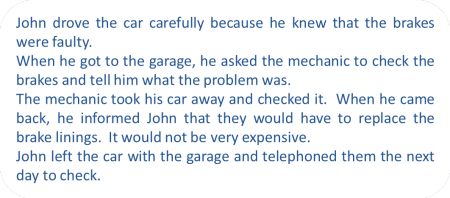

The essential grammar of the sentence
 |
| Wheels within wheels |
If you have never studied the grammar of English, you may like to try two areas on this site:
A short
Simple Grammar of English is designed for learners of
English but that's what you are in this case.
A short
language analysis course which will lead you through the
basics of phonology, morphology, lexis, phrases, clauses, sentences
and text structures.
This guide is concerned with the sentence which, sooner or later, forms the basis of most classroom analysis.
The term 'grammar' describes the whole system of a language and includes two important areas: syntax and morphology. We'll take them one at a time.
SyntaxHow words work together to make well-formed, meaningful utterances. |
As our example for this we'll take a simple sentence in English:
|
This man wants some coffee |
We can break this sentence down into its three main parts and look at each
one separately. Each of those parts can also be broken
down, like this:

This is called parsing a
sentence. Later in this guide, you'll learn how to do
it for yourself. For now, we'll just explain a little:
The three main parts are:
- This man:
this is the subject of the sentence and its Theme (what it concerns). It is a noun phrase made up of two parts, man (a common noun) and this (a determiner which tells us which man and limits the noun) - wants:
this is the verb which tells us what the subject is doing. In this case, it's a single word but can be a phrase such as would really like. The ending on the verb, -s, tells us that it is singular and that the subject is the third person (he, she, it). - some coffee:
this is the object of the verb wants and tells us what the verb refers to. It is a noun phrase made up of two parts, coffee (a common mass noun) and some (a determiner which tells us how much and limits the noun)
Each main part can be broken into two smaller parts (in this example):
- This: this is a determiner and tells us something about the man (in this case that it is a particular man near to the speaker). It could be a range of other determiners such as her (showing a relationship), that (showing that he is further away from the speaker), the (showing that it is a man both the speaker and listener are aware of) and so on.
- man: is a common singular noun (with an irregular plural, men). Because both speaker and hearer are operating in English, the meaning is clear – an adult male human.
- want: this is the base form of the verb.
- -s comes at the end because in English, this is how we change, or inflect, the verb to show a singular third-person form.
- some: this is another determiner, called a quantifier and tells us how much. It could be a range of other quantifiers such as two (but we'll change the noun to a plural form), lots of, a cup of and so on.
- coffee: this is a noun which usually has no plural but can in this case because it is used to stand for a cup of coffee. Usually, we don't say coffees in the same way that we don't say furnitures or informations and so on because the noun is considered uncountable in English.
 |
Subjects, Verbs, Objects and ComplementsIn the English sentences:
we only know who did what to whom by the order of the words. |
The subject comes first in both sentences so we know that is the doer of the action. The object follows the verb so we know that is the receiver of the action. If we reverse the order, we reverse the sense.
| In sentence 1 | the man is the subject of the verb kiss | the woman is the object of the verb |
| In sentence 2 | the woman is the subject of the verb kiss | the man is the object of the verb |
Usually, of course, we can understand what is the subject and what is the object of a verb by the meaning of the sentence:
- Peter drank the water
Cannot (sensibly) be changed to:
- The water drank Peter
Here's a little test.
Identify the subjects and the objects of the verbs in this story and
then click on the story for the answers.
|
 |
Notice that:
|
In the example above, the subjects, verbs and objects are quite simple
but they can be more complicated.
For example, in this sentence:
The old fisherman with the blue hat
slowly rowed his ancient
wooden boat which he cared for carefully into the middle
of the river.
we still have:
- the subject noun phrase:
The old fisherman with the blue hat - the verb phrase:
slowly rowed - the object noun phrase:
his ancient wooden boat which he cared for carefully - the prepositional phrase
into the the middle of the river
Because the elements of the sentence are groups of words rather than individual items, it makes sense to refer to them as phrases: the subject noun phrase, the verb phrase, the object noun phrase and the prepositional phrase.
In grammar books, you will often see the term nominative
(case) to refer to the subject and accusative (case)
to refer to the object. Most learners of English don't
need to understand these terms (but you do).
We have now identified two of the three cases in
English (the third is the possessive or genitive which does not concern
us here).
 |
Complements |
|
He was walking alone in the country last week |
Now that we can identify the subject, the verb and the object, we can look at the final bits of the sentences we have used so far. These are the complements and they come in many different guises. For example:
- He rowed into the middle of the lake
is a prepositional phrase complement because it tells us where he rowed - The boat was very expensive
is an adjective phrase complement because it tells us about a noun or pronoun - He was walking alone
is an adverbial phrase complement because it tells us how he walked - He walked back
the is an adverbial phrase complement telling us in which direction he walked (and prepositional phrases can do that too) - He was walking in the country
is another prepositional phrase complement because it tells us where he walked - He was walking last week
is another adverbial phrase complement because it tells us when he walked (and prepositional phrases can do that too)
 |
MorphologyHow we build words and change them grammatically. |
We make two kinds of changes to words in English:
- We change words to make different forms of the same idea. For example:
- We change words to conform with the grammar of what we mean. This is called inflecting and the parts we add or change are called inflexions. For example:
- If we have more than one man and more than one thing as an object, as in, e.g., These men want some biscuits, we make other changes:
|
|
Task 1:
Look again at the sections above and focus on the words
in
red. They are all terms we use when we are describing grammar. Click here to test yourself to see if you can remember what the words mean. |
 |
Tree diagrams |
Tree diagrams are a traditional way of illustrating the structure of a sentence and they can get quite complicated. Here we will deal with fairly straightforward examples.
 |
Task 2:
Look again at
how we parsed this sentence using a tree diagram: This man wants some coffee and try parsing this sentence: The driver kindly delivered the car to my door. Click here when you have written your answer. |
 |
This is how it should look. What we have done is:
- Identified the subject (the driver), the verb phrase (kindly + deliver + -ed), the object (the car) and a prepositional phrase (to my door).
- Broken down the subject into the determiner (the definite article the) and a singular common noun (driver).
- Broken the verb phrase into an adverb (kindly), the verb (deliver) and its past-tense marker (-ed).
- Broken down the object into the definite article (the) and a singular common noun (car).
- Broken down the prepositional phrase into the preposition (to) and the preposition's noun-phrase complement (my door).
- Broken down that noun phrase to a possessive determiner (my) and a common noun (door).
 |
So what? |
So quite a lot. Three important things, in fact:
- In order to be able to make grammatically correct sentences in any language, it is important to recognise how they are constructed. To be able to help people to do that, you need to know how to describe and explain the language. Now, for simple sentences at least, you can.
- To construct any sentence you have to know where things go. In English we usually put the subject first, then the verb and then the object. We also put the adverb before the verb in many cases (kindly delivered, not delivered kindly). We also say a beautiful house, not a house beautiful and three cars not cars three. Different languages handle this sort of thing differently.
- The other thing you need to know is how words in the
language change or inflect:
- To make present tenses (so we can distinguish between they make and he makes, and between we are going and I am going)
- To make past tenses so we can distinguish between I come and I came, she smokes and she was smoking)
- To make future tenses (so we can say things like I will go, I am going to go and I am leaving tomorrow)
- To make plurals (so we can produce the match-the matches, the car-the cars, the mouse-the mice and so on)
- To make other words so we can form kindly from kind
- To insert the right determiner (so we can distinguish between a car, the car, my car and some cars)
- To use prepositions (so we can distinguish between to my house, on my house, from my house next to my house) etc.
 |
Some practice for you |
|
|
Task 3:
In this table, try to parse
the sentences on the left, identifying all the parts and how
the words change. Click on the All the guides open in a new window so simply shut them to return to this page. OK? |
| He bought some
fresh apples in the market |
 |
| They were
going to open the parcel and look inside |
 |
| I had an hour
to spare so I read the newspaper |
 Notice that you cannot reverse the clauses without changing the meaning to nonsense (I read the newspaper so I had an hour to spare). |
| She wants to
come to the movie with you |
 |
| I hate making
mistakes |
 |
| They must go
now |
 |
| When I came,
he left |
 Notice that it is possible to reverse the clauses (He left when I came) but that the conjunction, when, moves with its clause. |
| The window was
broken by the children |
 |
| Grammatical
accuracy is often useful |
 |
some notes
- He bought some fresh apples in
the market
This is very like the second example in this page. We have a typical Subject - Verb - Object pattern (most sentences in English follow that).
some is a modifier which we can put before a plural or a noun which describes a mass (like, sugar, information etc.)
fresh is an adjective in the usual place
in the market is a simple prepositional phrase. Prepositions are often followed by nouns. In fact they serve to link the noun to the verb. - They were going to open the
parcel and look inside
This is an unusual tense form. It's called the future in the past. They are going to is the future but They were going to refers to a past intention (that didn't happen, usually).
going to is usually used to talk about intentions and it's followed by the simplest form of the verb, the infinitive
look is a verb here and it is followed by an adverb telling us where. - I had an hour to spare so I
read the newspaper
This is called a compound sentence because it consists of two potentially independent clauses.
There are two parts:
I had an hour to spare (the first main clause)
so I read the newspaper (the second clause)
The two clauses are said to be coordinated by the conjunction so. Often, we can reverse the clauses and retain the meaning. In this case, we can't however, because so is used to link cause and effect logically. - She wants to come to the movie
with you and
I hate making mistakes
Both of these sentences contain two verbs: want and come and hate and make.
The difference is that some verbs in English are followed by the verb with -ing (called a gerund) and some by the verb with to before it. - They must go now
must is an example of a special kind of verb called a modal verb. Modal verbs are auxiliaries and do not usually stand alone. For example, I can means very little without a context but I can swim carries meaning. - When I came, he left
This is not a simpler version of 3. above. It is an example of subordination, not coordination.
We have two clauses:
The main clause: he left
The subordinate clause: when I came.
The second clause tells us about his leaving and cannot stand alone. - The window was broken by the
children
This is called a passive because we can leave out by the children and it still makes sense. We are focused on the object of the verb break and we may not know who broke it. - Grammatical accuracy is often
useful
This is an example of one way English makes subjects of verbs bigger and more complete. We simply add an adjective before the noun. There are other ways to modify nouns.
|
|
Task
4:
Look again at the notes above and focus on the words
in
red. They are 10 more terms we use when we are describing grammar. Click here to test yourself to see if you can remember what the words mean. |
 |
More help |
Of course, this short guide can't possibly cover more than a
little of this huge subject but it has introduced you to some very
important terms and concepts. This site contains lots of
grammar guides and the most useful ones for you will be listed in
the initial plus index.
You can go there for much more detail but don't try to do it all at
once. Do what interests you or what is urgent at the moment
(because you are teaching it tomorrow!).
For more about the issues covered above, try:
Grammar books |
There are lots of good grammar books and, if you are at all serious
about teaching, you'll need one or two.
There are two sorts:
- grammar books intended for learners
These will be easier for you to access and will be enough at the beginning. Good examples are:
Foley, M & Hall, D, 1988, Longman advanced learners' grammar, Harlow: Longman
Swan, M, 2005, Practical English Usage (3rd Ed.), Oxford: Oxford University Press - books intended for more serious study and for use by
teachers
These are the places to go for the inside story but they are more difficult. Good examples are:
Leech, G and Svartvik J, 3rd edition, 2003, A Communicative Grammar of English, Harlow: Longman
Lock, G, 1996, Functional English Grammar, Cambridge: Cambridge University Press
Parrott, M, 2010, Grammar for English Language Teachers (2nd Ed.), Cambridge: Cambridge University Press
Thornbury, S, 2004, Natural Grammar, Oxford: Oxford University Press
Click here for a more complete list.
 |
Web resources |
You have already found a good one.
There are lots of websites intended to help people understand
aspects of English grammar. Many are wrong, many just lists of
interesting (or otherwise) facts and some are plain confusing.
Beware sites that prescribe by saying That's wrong!, This is
right! and so on. They are often written by people who
have an axe to grind and are rarely reliable.
Make sure you have a decent grammar book as well so you can
cross-check for accuracy.
There are a number of grammar exercises and lessons for learners on this site. Click here to go to them.